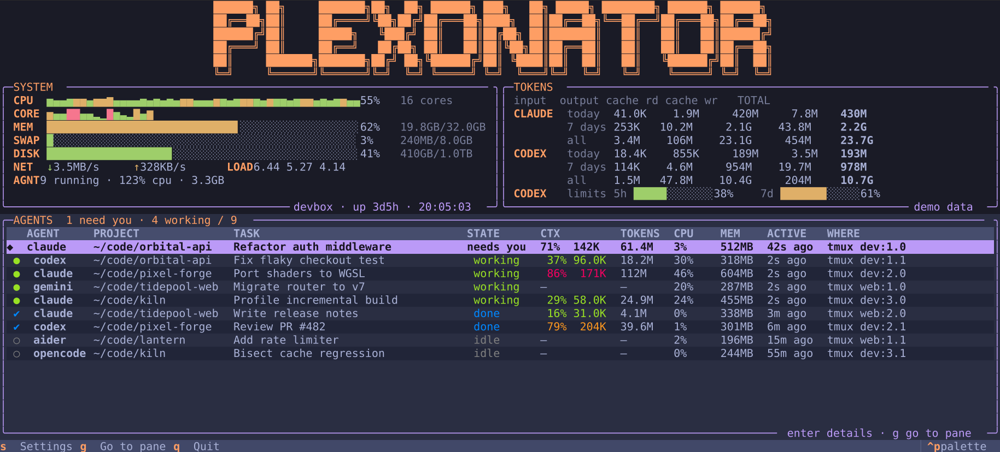
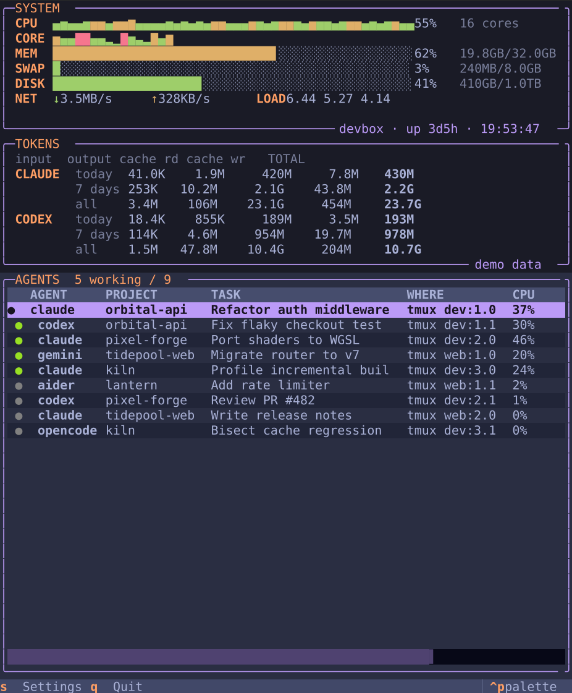
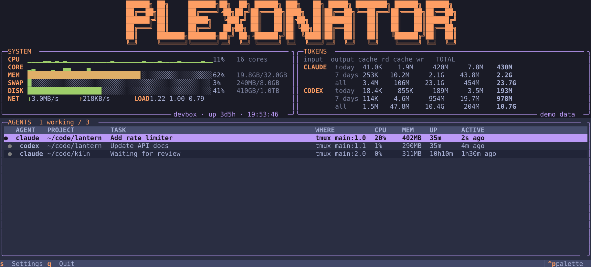

▚ plexonator
One pane that shows every AI coding agent you have running: what each one is doing, what your machine is doing, and how many tokens you have used.
$
git clone https://github.com/EmilSuuronen/plexonator && ./plexonator/plexonator.py#needs uv, which fetches Python and the two dependencies on first run
#add --demo to look around with made-up data, like on this page
claude · orbital-api ● Edit src/routes/billing.ts ● Run npm test -- billing ✓ 18 passed ✻ Checking types
codex · pixel-forge • edited bloom.wgsl +118 • ran cargo test • working golden images
gemini · tidepool-web ✦ Migrating 14 route files routes/account.tsx done routes/cart.tsx done routes/search.tsx …
claude · kiln ● Run kiln build --profile parse 212ms resolve 1.9s ← slow emit 340ms

